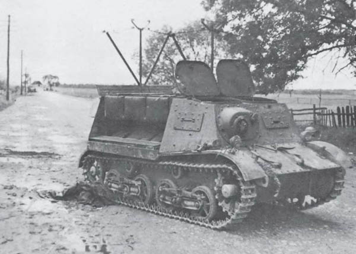
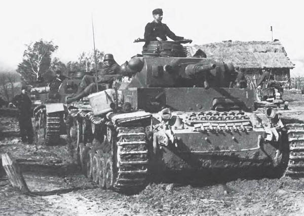
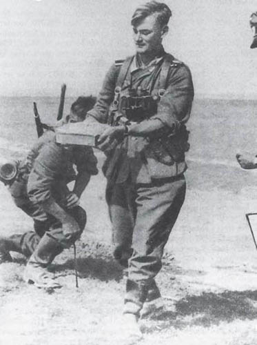
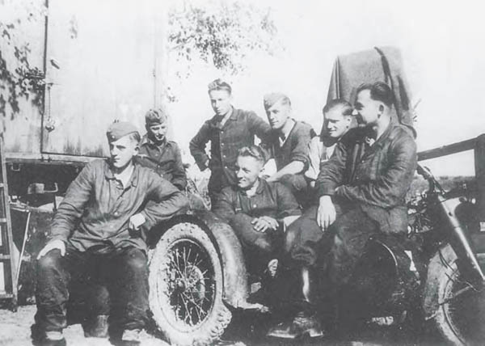
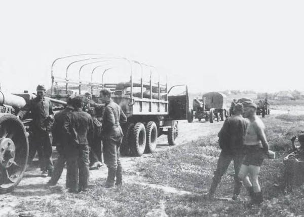
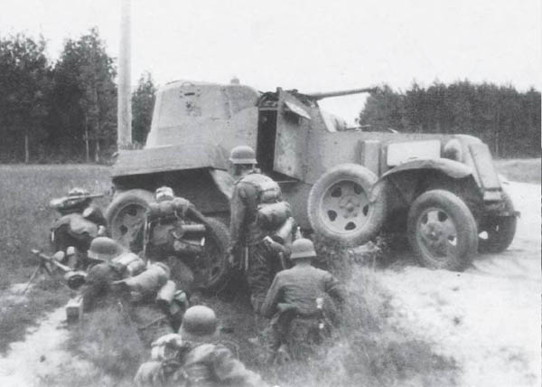
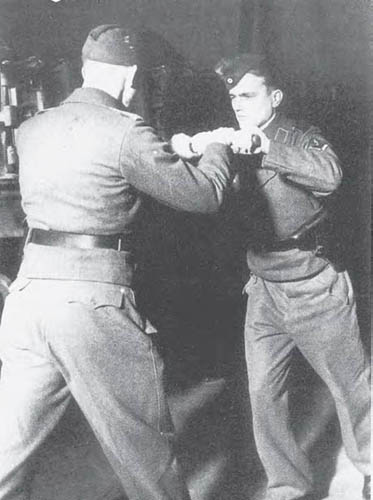
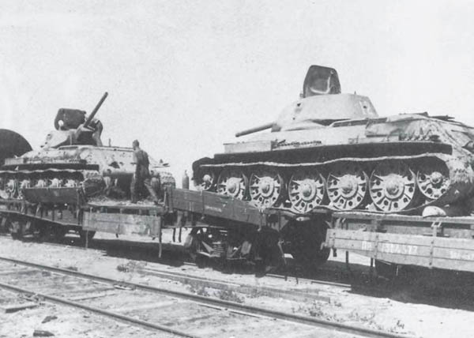
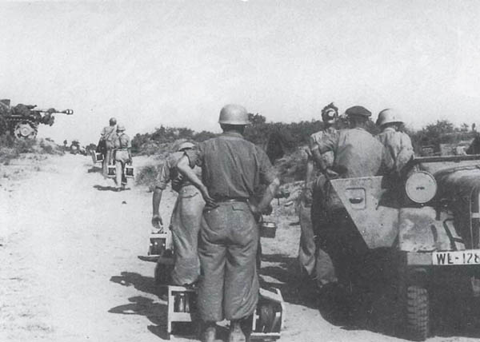
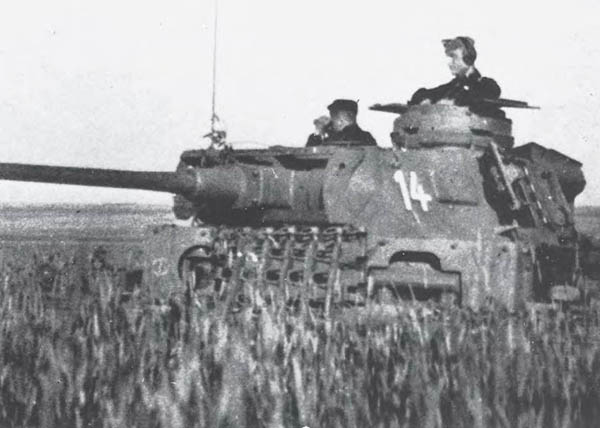

Zerstörter russischer Geschützschlepper (STZ Komsomolets)

Panzerkampfwagen III an der Ostfront

Gefährlicher Auftrag: Entfernung einer Panzermine von der Straße

Erinnerungsfoto einer I-Staffel

Marschpause auf der Rollbahn

Deckungsmöglichkeit für die Infanterie: ein liegengebliebener BA-10

Starten eines Sturmgeschützes mit Hilfe des „Schwungkraft-Anlassers“

Zerstörter T-34-Transportzug

Fallschirmpioniere verlegen T-Minen in Rußland

P III in einem sowjetischen Getreidefeld